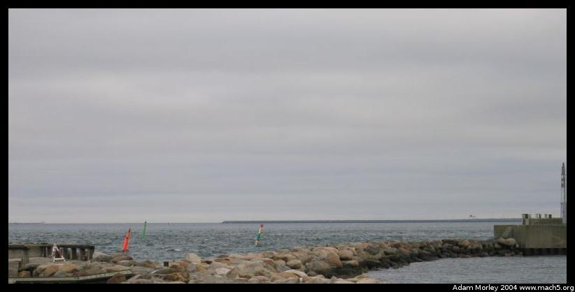

My host father Ole took me on a tour of Dragør, the town in which I am staying. The old city of Dragør is picturesque, as you will see below. Certain things about it are regulated -- the houses must be kept in a certain state, the paint must come from a specific place on Bornholm (it even has a characteristic taste), and only those who live in Dragør can park inside the old city (on the cobblestone/brick roads).
The old city is one of the places that truly resonated with me as a quintessential European old-town, a place where you go to live and be happy. Or something. A few movies have even been filmed on location in Dragør. I should point out that I do not live in the old city, I live in the other part of Dragør. Houses in the old city are smaller, and have no garden. They are also expensive -- about two to five million kroner ($400,000 - $1,000,000).
First on our trip were new buildings near the airport. For an unknown reason, someone got the idea that the American style barn was cool. So they built the barns. There were two, one an office building and one more of a storehouse with a roll-to-the-side door. They were such a success, they are building two more. Very odd sight.
Barns from a distance. Notice the original-style farmhouse in the frame too.
The new bridge to Sweden. Quite an engineering marvel, it consists of a tunnel that comes up on an artifical island and then the bridge. Denmark has many long bridges, but the one to Sweden is both long and expensive. I hope to go over it soon.

The artifical island, where the bridge comes up. You should be able to just make out the road signs on the right side of the frame.Even before the bridge, local pilots would go out and meet ships passing through the channel to assist them in navigating the waterway between Denmark and Sweden. The tower in the picture is the one that the pilots used to watch from. Now that there are radios, sitting in the tower and watching isn't needed anymore -- but pilots are still needed now that the bridge has been constructed. Ships can pass over the tunnel, or under the bridge, but obviously both are tricky.
A house across the street from the old city. Notice the roof-mounted greenhouse-like room. Apparently, that is where the wife and kids would go to look out at the sea and watch for the return of the husband/father.
Dogs like these are common in windows of the old city. When the dogs face in, the husband is home. When the dogs are out the husband is gone on a long trip at sea. Get the picture?
My host mom and dad both tell me that this is a world-famous restaurant. The chef has studied in France for a few years. My lucky parents will get to eat here when they come and tour the old city. Of course, you can eat here too if you come. ;-)
The original baker (bageri) in Dragør. Its not a bageri anymore though.
Homes in the old city will have little mirrors on their windows so they can look out and see who/what is in the street. They can also see who is at their front door while in the kitchen or any other room.
Crooked, narrow streets.
At the bird area, the rooster fight.
There used to be a goose/bird problem where the birds would wander around the city. They'd pick up excess trash, but they'd leave behind everything else. So the citizens created an area of land where the birds live now. Complete with waterfront.
More bird area.
Traffic problem. Yep, the planes fly right over a local road!
Landing lights right next to the road. . .Luckily, the house where I live isn't in the flight path.
There's even a location where you can drive up and park and go to a cafe called the "Aviation Cafe" or something along those lines. On the left is the two main runways of CPH, and on the right is a driving instruction school. Bad drivers? Not really, its apparently hard to drive on the track! And its right next to the airport, so when you're not watching the planes land, you can watch the drivers. Click the picture for the movie. Even better! This one totally spins out.
Adam can be reached at adam dot morley at gmail dot com